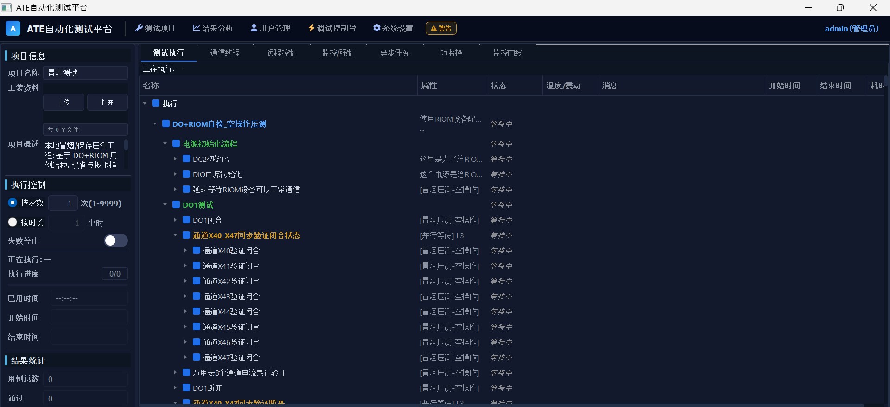

Rail transport / Test automation
ATE automated test platform
A C++ / Qt application for railway communication equipment and IO test benches. Configurable protocols and reusable test cases connect setup to execution and traceable reports.
The test environment
Railway test benches bring together communication interfaces, IO and instruments. Protocol changes and repeated validation make a shared configuration and execution workflow useful across integration, regression and production testing.
Core capabilities
- Protocol configuration. Import Excel definitions into a common resource and variable model, with checks on key fields.
- Reusable test sequences. Organize DSL test cases into units and flows, with conditions, loops and parallel execution.
- Observable execution. Inspect step results, monitor variables and frames, and retain session records for report export.

Software foundation
The platform separates test orchestration, protocol resources and device communication. Test cases reference named variables while communication workers handle the underlying interfaces. This structure supports protocol updates and reusable test logic.
Interface coverage depends on the hardware and project configuration.
Related note: configurable test workflows ↗